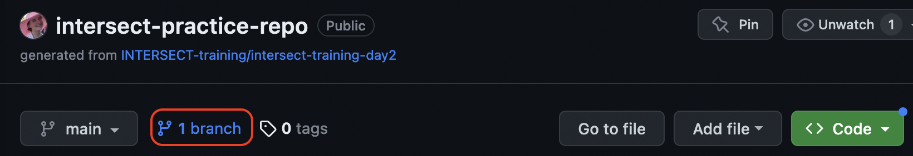
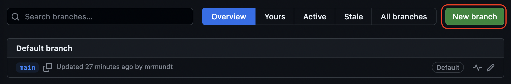
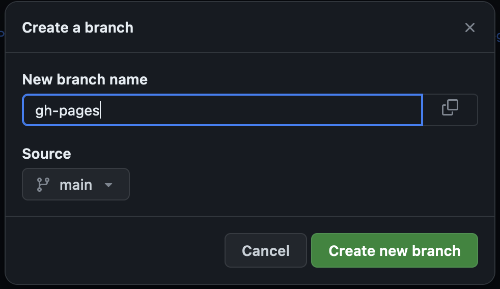
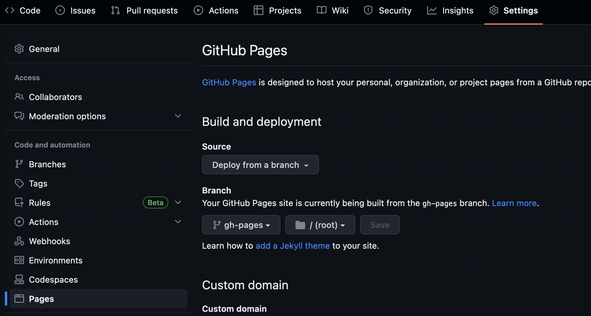
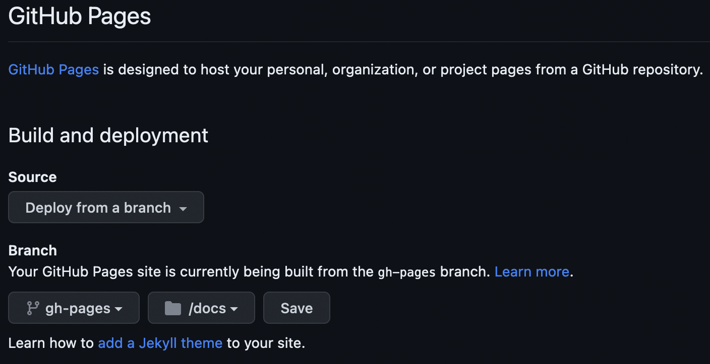

Content from Introduction
Last updated on 2025-01-04 | Edit this page
Estimated time: 10 minutes
Overview
Questions
- “What is software documentation?”
- “Why do we care about it?”
- “What are the challenges?”
Objectives
- “Become familiar with the benefits and challenges of software documentation.”
Software Documentation Overview
Software documentation, per Forward, is any artifact made as part of the software development process that is intended to communicate information about the software system about which it was written.

Most people are familiar with this concept and know good documentation when they see it. More difficult, however, is how to write good documentation.
In this lesson, students will learn about the different types of software development and practices and tools to enable better documentation.
The Benefits of Good Documentation
No one would argue that documentation is useful, but here are some of the benefits of good documentation:
- Better Maintainability: Undocumented or incorrectly documented code can do more harm than good. It is difficult to maintain code that does not have sufficient and accurate documentation. Good documentation clarifies what the code is doing in each part and makes it easier to change.
- Improved Team Productivity: Especially for new team members, sufficiently good documentation can help get everyone on the same page and new members up to speed.
- Increased Code Quality: Documenting what you think your code does helps to clear up inconsistencies and can lead developers to refactor something that is needlessly complicated. Overall, documentation has a positive effect on overall quality.
The Challenges to Making Good Documentation
As anyone would tell you, documentation isn’t easy. Some of the challenges involved are:
- Time: Writing good documentation can take time, and especially for projects with unreliable or limited funding, it can become a afterthought. It also introduces potential technical debt if interfaces or functionality change.
- Skill: Writing good documentation is hard. It must be practiced and practiced and practiced. People can become jaded by how much practice it takes to become truly skilled at documenting well.
- Process: Does writing documentation feel unnatural or “clunky” to you? Without proper processes, writing documentation can feel like it’s wasting your precious time.
What do you think of this documentation?
Navigate to https://spack.readthedocs.io/en/latest/ and spend a minute browsing the documentation.
- What makes this good documentation?
- Where is there room for improvement?
Key Points
- “Software documentation provides both users and developers information about what a software is supposed to do.”
- “Software documentation has numerous benefits including improved team productivity, increased code quality, and better maintainability.”
- “Software documentation can be challenging due to cost and time to maintain.”
Content from Types of Software Documentation
Last updated on 2025-01-04 | Edit this page
Estimated time: 10 minutes
Overview
Questions
- “What are the different types of software documentation?”
- “How do the types differ?”
Objectives
- “Become familiar with the two main categories of software documentation and how they differ.”
The Types of Software Documentation
In our discussion of documentation, we will focus on two overarching categories: Developer and User.


But wait… aren’t there more?
You may be sitting there and asking this question. Many different sources will list various alternative types of documentation such as requirements documentation and testing documentation.
These specific sub-types of documentation can be categorized into the two types listed here. We provide some examples below:
| Category | Examples |
|---|---|
| Developer | Requirements documentation; testing documentation; API documentation |
| User | How-to guides; tutorials; troubleshooting guidelines |
Can you think of more?
What other types of documentation can you think of? Do they fit into the categories above?
Characteristics of Each Type
| Category | Intent | Target Audience |
|---|---|---|
| Developer | To inform developers how to interface with a given software package throughout the entire software development lifecycle, including team processes. | Developers, stakeholders, team members, technical members of project |
| User | To inform users how to be more successful in the usage of a software package from installation to usage, including examples, troubleshooting, etc. | End-users, stakeholders |
Key Points
- “There are two primary categories for documentation: developer and user.”
- “Developer documentation is intended to describe how developers should interface with a given software package.”
- “User documentation is intended to help users be more successful in the usage of a software package.”
Content from Documentation Better Practices
Last updated on 2025-01-04 | Edit this page
Estimated time: 30 minutes
Overview
Questions
- “How does bias affect documentation?”
- “What are better practices for software documentation?”
Objectives
- “Learn about some of the unconscious biases that are apparent when writing documentation.”
- “Become familiar with practices that have been empirically shown to improve software documentation, both in process and end product.”
Let’s make a sandwich
We are going to make a nut butter and jelly sandwich.
- Write instructions for making this sandwich.
- Trade instructions with another participant and read each others’.
- How clear are the instructions? What are the strengths and weaknesses?
Bias in Documentation
You have now told your partner how to make a sandwich. Have you ever done that before? Maybe you told them the steps:
- Get two slices of bread
- Spread condiments on the bread
- Put the slices together
These steps may seem clear to you, but you have the benefit of context. You know what a sandwich is. You’ve eaten one before. You may have even made one before. As a result, you are able to fill in the logical gaps that someone who has never seen or eaten a sandwich might not know.
You must be thoughtful when writing your documentation. In particular, it is important to consider:
- Culture: You are an end product of your culture. Your culture provides you with a common understanding, common language, and more. Avoid slang/colloquialisms (e.g., “spaghetti code”), use clear and concise language, and consider how your audience’s culture may differ from your own.
- Context: What does “workflow” mean? That depends on your context. Different domain sciences may use the same words in different contexts. Be cautious of this and ensure that your audience is aware of your domain’s particular language and context.
- Experience: People are different, and their experiences are different. Your documentation should also take that into account. Design your documentation to match the experience level you expect of your audience, and note that in the documentation!
Documentation Better Practices
There is no one-size fits all process for documentation. Instead, use this as a guide for some better practices that may help your project.
- Version control your documentation: Especially if your documentation is separate from your code repository, it is imperative to version control your official documentation. This can help you track the changes over the time, revert, find trends, etc., much like you would do with source code.
- Good enough is better than perfect: Documentation takes a lot of time, and there will always be room for improvement. It is always better to have good enough documentation than to get stuck in endless discussions and iterations to try to make it “perfect.” It can always be updated if need be later.
- Less is more: More documentation means more technical debt. It’s a good practice to minimize your documentation to what you actually need. The less documentation you have, the more time you have to make that documentation better. As your project grows, that may mean your set of documents grows. You should always aim, however, to have just the right amount. If you have an established project that seems like it has a lot of unnecessary documentation, consider flagging documents for removal.
- Know your audience: Who is supposed to use this documentation? What level of knowledge do they have? Answering these questions will help you anticipate questions and help needed.
- Document as you go: It can be difficult to go back and write documentation a day later. It’s even more difficult to try to do it a month later. It is recommended that documentation updates happen as part of your regular work so it’s fresh in your mind and can help inform your development path.
- User test your documentation: A great way to keep your documentation current and accurate is to regularly use it. This, however, goes back to the sandwich idea - you may have a bias and fill in the gaps that you consider to be “obvious.” Instead, have a new team member try to use the documentation. For every question they have or barrier they hit, make an adjustment to that section of the document.
Let’s make a sandwich… again
Try this exercise again. We want to make a nut butter and jelly sandwich.
- Write instructions to make this sandwich.
- Partner with the same participant as before.
- Discuss: What changes did you make?
Key Points
- “It is important to be aware of potential unconscious biases when writing documentation. Make sure to consider culture, context, and experience.”
- “No single practice will fit all software projects, but there are some generally better practices: version control, less is more, know your audience, document as you go.”
Content from Documentation in Practice
Last updated on 2025-01-04 | Edit this page
Estimated time: 15 minutes
Overview
Questions
- “What does developer documentation look like in practice?”
- “What does user documentation look like in practice?”
Objectives
- “Become familiar with real-life examples of documentation.”
- “Practice writing different kinds of documentation.”
Developer Documentation Examples
| Documentation Type | Explanation | Example |
|---|---|---|
| Team processes | This type of documentation documents the expected development processes within a team. These generally include an objective, stakeholders, and steps to follow. | US-RSE’23
Website Repository CONTRIBUTING guide |
| Styles and standards | This type of documentation states the expectations on styles and standards within a code. This can include preferred tools, usage of existing style guides, and project or domain-specific standards. | Pyomo’s Required Coding Standards |
| API | This type of documentation is both developer and user documentation. From a developer perspective, this documentation elaborates the intent of the code, e.g., what the code is supposed to be doing, which can improve maintainability. | Spack’s API Documentation |
PRACTICE: Euler’s Method Documentation
Have you heard of Euler’s Method? It’s a way to calculate a numerical
approximation for the value of a function, based on a starting value
x_0, a particular step size h, and the
derivative of the function.
Write some documentation for the following code snippet:
PYTHON
class EulersMethod:
def deriv(self, x, y):
return y**2 + y*x + x**3
def approx(self, y, x, h):
y_j = y + h*self.deriv(x, y)
x_j = x + h
return y_j, x_jBONUS: How would you improve this code to make it more clear?
User Documentation Examples
| Documentation Type | Explanation | Example |
|---|---|---|
| Installation | This documentation is meant to help users get a package installed and working properly. Frequently, it will detail not only the different methods of installing the software, but also simple explanations of how to ensure it was installed correctly (e.g., a sanity test). | NumPy Installation Instructions |
| Debugging and troubleshooting | This type of documentation helps users troubleshoot common errors. This is normally built from previous questions or common mistakes, such as invalid setup, options, or inputs. | Pyomo Common Warnings and Errors |
| Tutorials and examples | This type of documentation is meant to show users, step-by-step, on either small or real-world scales, how a software package is supposed to be used. This documentation helps with clarifying the developers’ intended use and acts as a starting point for users. | Pandas Getting Started Tutorials |
PRACTICE: Install Python
Assume that you have a new team member who does not have Python on their machine and wants to install it. They send you an email to ask how they should do it.
- Do you have all the information you need to answer this question? Why or why not?
- Given only the email, write instructions detailing how to install Python from python.org.
REMINDER: Culture, Context, Experience
Keep in mind culture, context, and experience when writing your instructions.
Key Points
- “There are numerous examples of different types of documentation in practice, each with its own intended purpose.”
- “A project must pick the documentation that makes the most sense for its use case and domain.”
Content from Documentation Tools
Last updated on 2025-01-04 | Edit this page
Estimated time: 25 minutes
Overview
Questions
- “What tools enable better documentation?”
- “What tools can streamline the documentation process?”
Objectives
- “Become familiar with categories of tools to streamline documentation processes.”
- “Practice using a small subset of documentation tools.”
Documentation Tools
There are plenty of tools to make documentation easier. In this episode, we will cover just a few, but keep in mind, this is by no means an exhaustive list.
Style Guides and Standards
A good first step to streamline the documentation process is to create or apply an existing style guide. This is useful both for developer and user documentation.
For users, common standards and styles makes the documentation predictable, consistent, and easier to read and use. For developers, common standards and styles allow developers to focus more on logic than styling and makes fewer ambiguities and increases the chance that they will identify errors.
There is no single standard across all languages and projects. Some language style guides have specific recommendations for in-line documentation like code comments and API documentation (e.g., Doxygen, Google, NumPy).
PRACTICE: Google Style for Euler’s Method
Google has many style guides, including a Python guide for writing docstrings.
Using the Google style guide, write a docstring for the following class and its methods:
IDEs
Modern integrated development environments (IDEs) are applications that combine text editing with other useful tools like building, testing, etc. Many also enable automatic documentation generation in some variety. To name a few:
| IDE | Languages |
|---|---|
| VSCode | PHP, HTML, CSS, SCSS, Less, JavaScript, JSON, TypeScript, Markdown, PowerShell, C++, Java, Python, Go, T-SQL, C#, .NET Core, etc. |
| NetBeans | C, C++, C++11, Fortran, HTML 5, Java, PHP, etc. |
| PyCharm | AngularJS, Coffee Script, CSS, Cython, HTML, JavaScript, Node.js, Python, TypeScript |
| Eclipse | C, C++, Java, Perl, PHP, Python, Ruby, etc. |
Many of these IDEs incorporate documentation generators that follow standard style guides. For example, the Spyder IDE will begin to generate docstrings based on your specified style guide.
Automated Generation
Another set of tools that streamline the documentation process are those that automatically generate the documentation within your software package. The two most popular documentation generators are:
Both of these tools will generate documentation, per configuration preferences, and automatically integrate information like API documentation.
PRACTICE: Trying out Sphinx
We will quickly practice getting Sphinx set up on a project.
NOTE: These steps assume you are working from the command line and have a clone of your practice repository.
- (OPTIONAL, but recommended) Make a virtual Python environment
- Install sphinx:
pip install sphinx - Move to your practice directory:
cd /path/to/your/practice/repository - Make and move to a document directory:
mkdir docs && cd docs - Run Sphinx’s quickstart:
sphinx-quickstart(NOTE: Use default options as applicable; fill out everything else as you desire.) - Generate the documentation:
make html - View your documentation:
open _build/html/index.html
Automated Publishing
Potentially the most helpful method of streamlining the documentation process is to implement automated publishing. By implementing this, when a new feature or change is merged into your code base, your documentation will be generated and published automatically. Two popular documentation hosting tools are:
Both of these services will publish documentation from open source software for free. They can be set up to publish the most recent version of all documentation as soon as a new change is introduced to the main code.
We will practice doing this with GitHub Pages. Before getting into the exercise, you will need to make sure GitHub Pages is activated on your practice repository.
-
Make a
gh-pagesbranch. Either from the GUI or through command line, make a new branch namedgh-pages. In the GUI, you would do this by clicking on the branches link:  Then click on “New branch”:  Name itgh-pages:  - Set up GitHub to build from that branch. In the GUI, go to “Settings” > “Pages”:  Change the settings to “Source: Deploy from branch”, “Branch: gh-pages”, and “directory /docs”. Then hit “Save.” 
Now complete the following exercise!
PRACTICE: Sphinx to GitHub Pages
Now that we have some starter documentation, let’s publish it to GitHub Pages.
NOTE: These steps assume you are working from the command line and have a clone of your practice repository.
- Make a local copy of the
gh-pagesbranch:git -b checkout gh-pages - Set your local copy to track GitHub’s copy:
git push --set-upstream origin gh-pages - Move to the
docsdirectory and clean up the previous build:cd docs && make clean - Change the default build location: For
Makefileandmake.bat, changeBUILDDIR = _buildtoBUILDDIR = . - Make your documentation:
make html - Make a file
index.htmlin thedocsdirectory with the content:<meta http-equiv="refresh" content="0; url=./html/index.html" />(NOTE: This tells GitHub to use thehtml/index.htmlfile as the main page.) - Add all your changes, commit, and push:
git add docs/ && git commit -m "Add documentation to GitHub Pages" && git push - Wait a minute or two, then view your documentation at https://YOURUSERNAME.github.io/intersect-practice-repo/html/index.html
What happened to the styling?!
GitHub renders styles in a unique way using Jekyll. We can turn this off by adding
an empty .nojekyll file in the docs
directory.
That’s it! You now know some useful tips and tricks for making better documentation.
Key Points
- “Documentation tools vary from styles to text editors to automation.”
- “Many tools have quick-start capabilities to get small or new projects started with better documentation processes.”